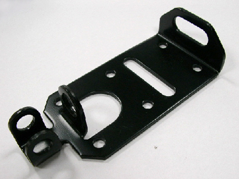

NO. 000001
stamping product
njection molding is an extremely versatile process for producing a wide range of simple or complex plastic parts economically. CYM can produce plastic products in PP, PE, PC and Nylon materials.